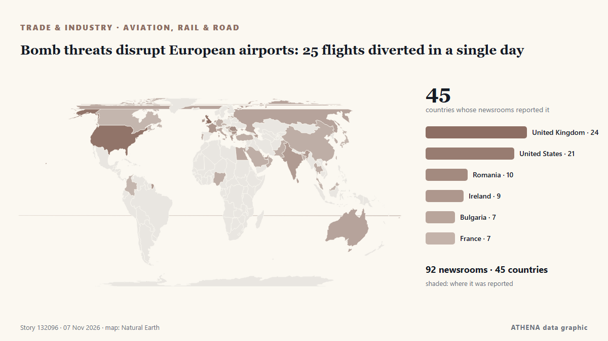

Αερομεταφορές, σιδηρόδρομος & οδικές
ΧορηγούμενοΠαρουσιάζεται από  Cybernetics and Artificial Intelligence Lab Welcome to the Cybernetics and Artificial Intelligence Laboratory, established at the Department of Business Administration of the National and Kapodistrian University of Athens. The lab is headed by Professor Dimitrios Thomakos. The lab aims to do research that can be published in top venues. Our research uses tools and methods of Artificial Intelligence, and lies in the following areas: - Forecasting - Decision making - Cyber security - Finance We are always looking forward to collaborating with exceptional students!
Cybernetics and Artificial Intelligence Lab Welcome to the Cybernetics and Artificial Intelligence Laboratory, established at the Department of Business Administration of the National and Kapodistrian University of Athens. The lab is headed by Professor Dimitrios Thomakos. The lab aims to do research that can be published in top venues. Our research uses tools and methods of Artificial Intelligence, and lies in the following areas: - Forecasting - Decision making - Cyber security - Finance We are always looking forward to collaborating with exceptional students!
| 25 Οκτ | 0 |
|---|---|
| 26 Οκτ | 1 |
| 27 Οκτ | 0 |
| 28 Οκτ | 0 |
| 29 Οκτ | 0 |
| 30 Οκτ | 1 |
| 31 Οκτ | 0 |
| 1 Νοε | 1 |
| 2 Νοε | 1 |
| 3 Νοε | 3 |
| 4 Νοε | 3 |
| 5 Νοε | 8 |
| 6 Νοε | 6 |
| 7 Νοε | 0 |
Οι τίτλοι των ειδήσεων παρουσιάζονται στα αγγλικά, όπως δημοσιεύτηκαν.

Bomb threats disrupt European airports: 25 flights diverted in a single day
Anonymous tip-off about explosives on Ryanair planes from Lisbon and Dublin prompted fighter jet escort; similar false alerts reported across Europe on Tuesday. από Wanted in Rome (working feed)
European Air Traffic Targeted by New Threats in at Least 3 Incidents
Officials across Europe report more bomb threats against flights, following a series of hoaxes causing diversions this week. από ABC News (International)
Aer Lingus passenger's 'teary' moment as Dublin to Rome flight diverted by bomb threat
Dublin-Rome flight diverted to France over bomb threat: French government. από Gulf News
Fighter jets scrambled after Aer Lingus pilots initially refused to land at military base
It's understood that the pilots wanted to land at a commercial airport instead. από Irish Mirror
Singapore Airlines to splash $1.6 billion on luxury long-haul cabins as rivals up their game
SINGAPORE: Singapore Airlines, long a benchmark for premium travel, is spending more than S$2 billion ($1.6 billion) to upgrade long-haul seats and provide larger double-bed suites to compete with… από Business Recorder
Ukraine to resume medical air evacuation flights by year-end, PM says
The government has approved regulations governing the flights, which will be used to transport patients, medical personnel, donor organs and equipment between hospitals, as well as to take patients… από Kyiv Independent
Fighter jet escorts, flight diversions: What we know about Europe’s wave of hoax bomb threats
No clear pattern has emerged among the airlines and airports targeted, although a significant number of the affected flights either departed or were bound for Italy. από CNA (Channel NewsAsia)
Peru airport thwarts plot to smuggle 3,000 tarantulas in dirty socks
During a routine customs inspection, agents noticed some unusual wriggling inside the luggage. από The Straits Times
Third wave of 'hoax' bomb threats hit 27 passenger flights across Europe
Bomb threats have affected at least 27 flights in Europe on Thursday , including in France, Bulgaria, Italy, Austria, Belgium and the Czech Republic. από ABC News Australia
KLM announces 5,000 job cuts; 15% of its workforce disappearing
KLM is cutting 5,000 jobs, about 15 percent of its total workforce, the Dutch airline. από NL Times
Kazakhstan Prepares for High-Level Diplomatic Week with International Leaders
The Astana Times provides news and information from Kazakhstan and around the world. από The Astana Times
Emirates Group records $1 billion profit for 2026-2027 despite regional disruption
The Emirates Group saw customer demand holding firm and cargo operations making a strong contribution. από Arabian Business
Syrian arrested at Beirut Airport with 40kg suspected cocaine shipment from Ghana – NACOC confirms
The Narcotics Control Commission (NACOC) has confirmed the arrest of a Syrian national at the Rafic Hariri International Airport in Beirut, Lebanon, after he allegedly attempted to transport… από MyJoyOnline
Indian injured in attack on Saudi airport dies, total West Asia toll now 24
The Indian embassy in the Saudi capital, Riyadh, announced the death of the Indian man on social media on Wednesday. από Hindustan Times
International News: Haiti police find burned vehicle used by missing Salvadoran technicians
By Zoila Palma: Haiti’s National Police say they have found the charred remains of a vehicle used by four Salvadoran aviation technicians who went missing after an attack in gang-controlled territory… από Breaking Belize News
Singapore Airlines says 46,000 booking records affected by Amadeus breach
SINGAPORE: Singapore Airlines said on Tuesday that about 46,000 booking records may have been affected by a cybersecurity incident involving Amadeus, its reservation technology provider. από New Straits Times
Choice Shonky awards 2026: From ticket sellers and Virgin flight credits to a 25-hour laundry cycle
Australia’s worst products and services for the year have been named by consumer advocacy group Choice Get our breaking news email, free app or daily news podcast Concert tickets that surge to… από The Guardian